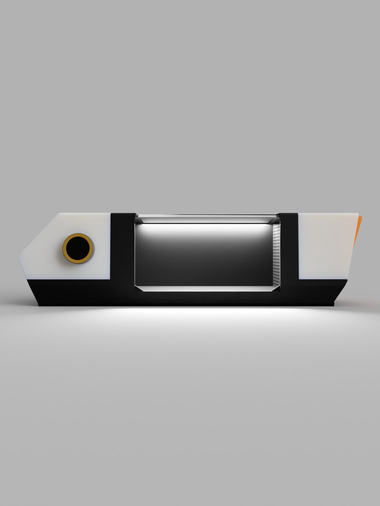
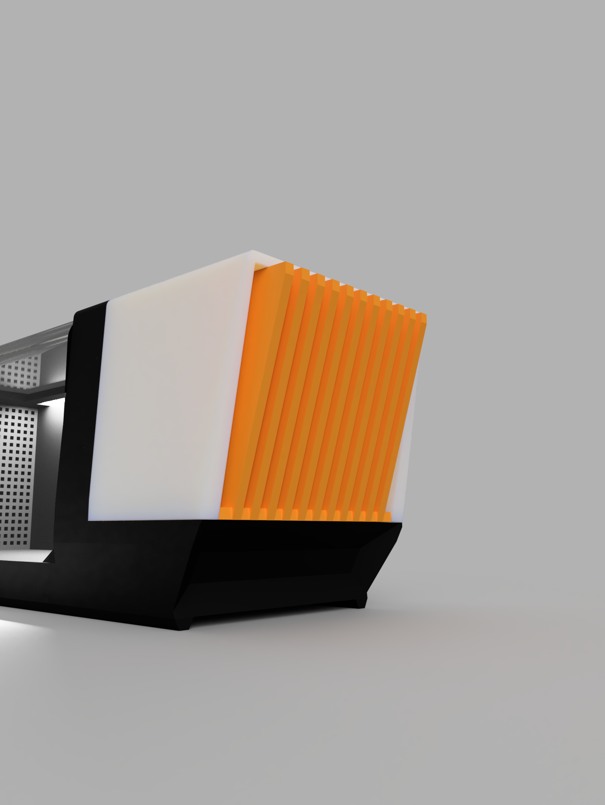
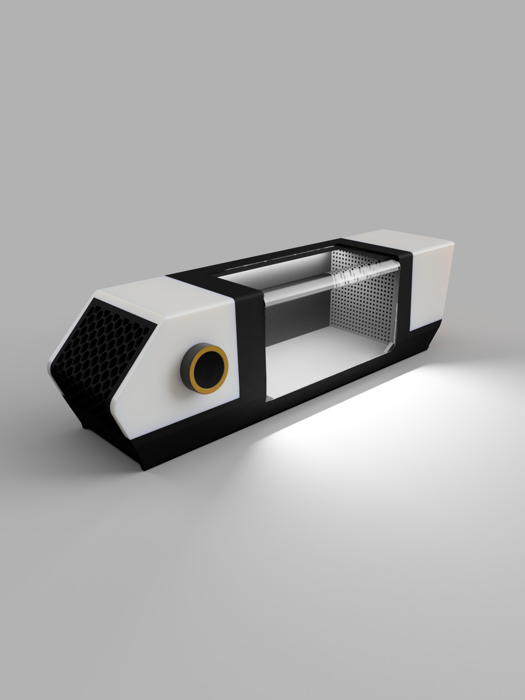
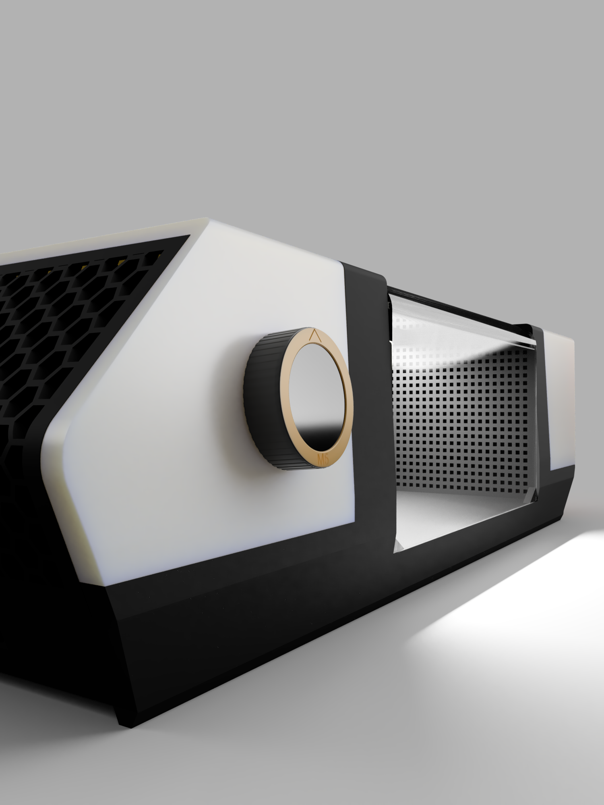
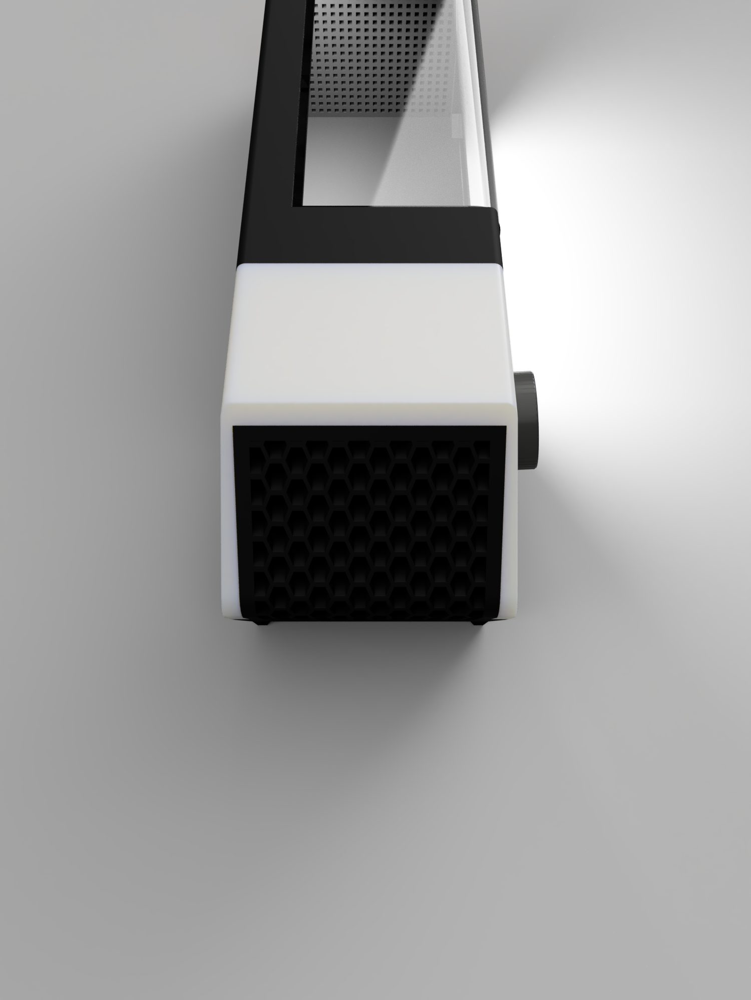
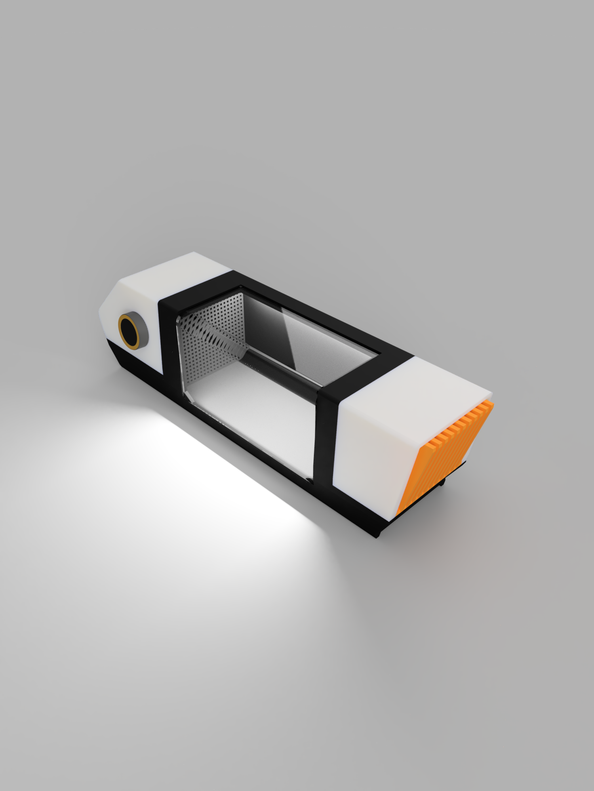
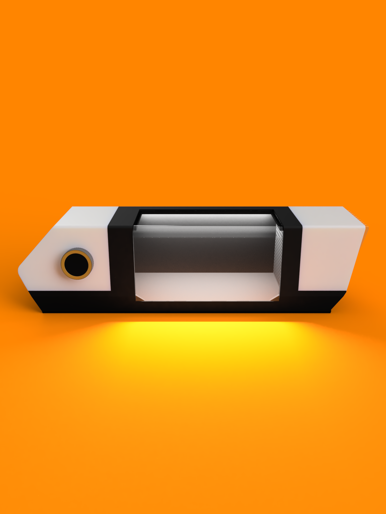
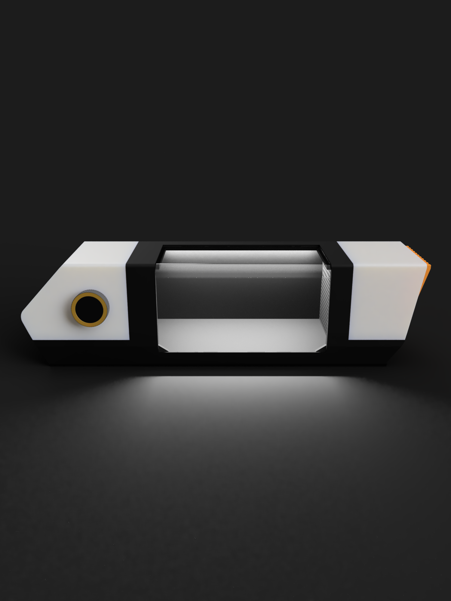

AEROVIS je projekt, ki združuje tehnologijo, avtomobilizem in inovativno razmišljanje. Razvijava ga dva dijaka 3. letnika računalniške smeri na srednji tehniški šoli, z željo ustvariti nekaj drugačnega – namizni vetrni tunel za vizualizacijo aerodinamike avtomobilov.
AEROVIS is a project that combines technology, motorsport and innovative thinking. It is developed by two third-year computer science students at a technical high school, with the goal of creating something different – a desktop wind tunnel for visualizing the aerodynamics of cars.
Celoten design in razvoj sva zasnovala sama. Pri projektu uporabljava M5Dial, ventilator s hitrostjo 3000 RPM ter DIY fog machine, ki omogoča prikaz gibanja zraka okoli avtomobilov. Na ta način lahko opazujemo aerodinamične lastnosti modelov in bolje razumemo vpliv pretoka zraka na vozilo.
We designed and developed everything ourselves. The project uses an M5Dial, a fan running at 3000 RPM and a DIY fog machine that makes the movement of air around cars visible. This lets us observe the aerodynamic properties of models and better understand the effect of airflow on a vehicle.
Velik del projekta temelji na samostojnem učenju. Modeliranje, načrtovanje in razvoj sistema sva se naučila sama skozi raziskovanje, testiranje in veliko praktičnega dela.
A large part of the project is based on self-taught learning. We learned modeling, design and system development on our own through research, testing and a lot of hands-on work.
AEROVIS ni le fizični model vetrnega tunela. V prihodnosti želiva razviti tudi lastno aplikacijo, ki bo omogočala spremljanje dodatnih podatkov, kot so:
AEROVIS is not just a physical wind tunnel model. In the future we also want to build our own app that tracks additional data, such as:

Razmišljava tudi o povezavi s simulatorji vožnje, kot je Assetto Corsa, kjer bi lahko simulacije in podatke prenesli v virtualno okolje ter tako še bolj realistično prikazali vpliv aerodinamike na vozilo.
We are also considering a link with driving simulators such as Assetto Corsa, where simulations and data could be transferred into a virtual environment to show the effect of aerodynamics on a vehicle even more realistically.
AEROVIS predstavlja najino strast do tehnologije, programiranja in avtomobilizma ter dokaz, da lahko z idejo, znanjem in vztrajnostjo nastane nekaj res posebnega.
AEROVIS represents our passion for technology, programming and motorsport, and proof that with an idea, knowledge and persistence something truly special can be created.